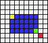

The d3d11x Module¶
DirectPython extensions. This module contains some useful utilities written in Python.
Many objects (Mesh, Sprite, HeightMap and SkyBox) can be configured to use your effect files (as long as they have compatible input layout). See Resource for instructions.
Most included shaders tend to be extremely simple and mostly for general demonstration purposes, so you probably want to replace them with your own versions or even create your own classes. If you are not familiar with HLSL (High Level Shader Language) you could even use some existing fixed function pipeline “emulator” effect.
Constants¶
Flags for Sprite.drawText()
- TEXT_ITALIC¶
Fake italic, the text is tilted slightly.
- TEXT_SINGLELINE¶
All line breaks are ignored.
- TEXT_STRIKEOUT¶
Text is drawn with a strikeout.
- TEXT_UNDERLINE¶
Text is drawn with an underline.
- TEXT_XCENTER¶
Text is centered horizontally (x-axis). Requires TEXT_SINGLELINE.
- TEXT_YCENTER¶
Text is centered vertically (y-axis). Requires TEXT_SINGLELINE.
- TEXT_CENTER¶
Text is centerd horizontally and vertically (TEXT_XCENTER | TEXT_YCENTER | TEXT_SINGLELINE).
Functions¶
Module level functions.
- loWord(v)¶
Returns the low order word of a integer value. Useful when handling window messages.
- hiWord(v)¶
Returns the high order word of a integer value. Useful when handling window messages.
- isMouseMessage(msg)¶
Returns True if the message is a mouse message.
- isKeyMessage(msg)¶
Returns True if the message is a keyboard message.
- featureLevel(level)¶
Returns the value from d3d11.Device.getFeatureLevel() as a tuple.
- getResourceDir(*args)¶
Returns the default resource directory where effects, meshes, textures etc. are looked from. If any arguments are passed the function behaves similary to os.path.join.
path = getResourceDir("Effects", "MyEffect.fx")
You can (and possibly should if you are using py2exe or anything similar) replace this function with your own version.
def myGetResourceDir(*args): ... return path #Do this before loading any d3d11x-objects. d3d11x.getResourceDir = myGetResourceDir
Classes¶
Accessor¶
This utility class can be used to handle data returned when slicing Texture-objects. Only useful when using “normal” (non-compressed) textures.
- class Accessor¶
- Accessor(list bytes, size, int bytesize) → Accessor¶
Parameters: - bytes – 1D slice data from a Texture.
- size – Size (int width, int height) of the sliced data in pixels.
- bytesize – How many bytes one element takes. For example RGBA8 has four 8-bit components, so bytesize would be 4.
Constucts a new Accessor.
- Accessor[int x, int y] -> sequence
Index the 1D-data using 2D-values. The coordinates are naturally relative to the orginal slice.
- Accessor[int x, int y] = sequence -> None
Assign byte data.
t = Texture(...) #Mapped texture (MAP_READ_WRITE), assume RGBA8 format
S = (128, 64) #Size of the slice.
data = t[:S[0], :S[1]] #Read some data.
accessor = Accessor(data, S, 4) #RGBA8 has a bytesize of 4.
accessor[64, 50] = [255, 0, 0, 0] #Change pixel x=64, y=50 to red (relative to the slice).
... #Maybe do someting else with the data.
t[:S[0], :S[1]] = data #Write it back.
Camera¶
A simple camera class which handles user input and moves the camera accordingly. Default controls:
- W, up arrow - Forward
- A, left arrow - Left
- S, down arrow - Backwards
- D, right arrrow - Right
- Shift - Hold down for faster movement.
You can also move the camera with the mouse. Holding the left mouse button down and then moving the mouse will rotate the camera’s viewing direction without moving the camera itself. With the mouse wheel you can lower or raise the camera.
- class Camera(position=(0, 15, -20), lookat=(0, 0, 0), speed=1.0)¶
Parameters: - position – Starting position vector.
- lookat – Starting look-at point.
- speed – Relative speed of the camera movement.
Creates a new Camera.
- drive(target, lookat)¶
Parameters: - position – Final target position for the camera drive.
- tracking – The position which the camera tracks during the drive.
Starts a camera “drive” from camera’s current location to the target position. During this time user input is ignored. When the camera has reached the target position the drive is stopped and user resumes control.
- isDriving()¶
Returns True if the camera is currently in drive mode.
- onUpdate(frameTime)¶
Parameters: - frameTime – Time passed since the last update. This is used to adjust movement speed.
Should be called once per frame (unless paused etc). This updates cameras position and checks if the user is pressing any movement keys.
- setView(position, lookat)¶
Sets the position and viewing direction.
- dir¶
Current (normalized) viewing direction of the camera.
- pos¶
Current position of the camera.
Frame¶
A simple framework class for all samples. This class offers some basic functionality common to all samples so that they can fully focus on their subject rather than spend time with basic tasks like creating resources and handling messages. It also provides some trivial convenience methods so that certain non-relevant but common tasks can be “removed from sight”.
It is recommended that you examine how this class is implemented before you try to write your own - especially if you are not familiar with Windows programming.
- class Frame(title, helpText='No help provided.')¶
Constucts a new Frame.
- createLookAt(eye, point)¶
A convenience method which creates a view matrix.
- createProjection(fov, zmin, zmax)¶
A convenience method which creates a projection matrix. Note that fov should be in degrees.
- exit()¶
Perfoms some cleanup and calls sys.exit() (which in turn raises a SystemExit exception).
- loadTexture(name)¶
A convenience method which loads a texture from the default texture directory.
This is included to avoid ugly directory joining and hard coded paths in samples. It also makes easy to add any caching etc. if required. For example when using the loadTextureView() this:
resourceDir = d3d11x.getResourceDir("Textures") texture = d3d11.View(d3d11.Texture(os.path.join(resourceDir, "example.dds")))
can be written (much more cleanly) as:
texture = self.loadTextureView("example.dds")
- loadTextureView(name)¶
A convenience method for loading texture views.
- mainloop()¶
Starts the mainloop which runs until the window is closed or the loop is terminated in some other way.
- onChar(event)¶
Called when the user has pressed a character key. This is a convenience callback, onKey() reveices keyboard messages too.
def onChar(self, event): if event.char in ("x", "X"): #Upper- and lower-case. print("You typed 'x'")
- onCreate()¶
Called once when when the Frame has initialized itself.
- onKey(event)¶
Called when the user presses, releases or holds down a key.
- onMessage(event)¶
Called first for each message. If this method returns True, Frame assumes that the message was handled and does no further processing. Otherwise the message is processed normally and then forwarded to the appropriate callback (if any).
- onMouse(event)¶
Called when a mouse event has occurred.
#Override the default onMouse()-handler. def onMouse(self, event): if event.code == WM_LBUTTONDOWN: #User pressed the left mouse button. print("You clicked at x=%i, y=%i" % (event.x, event.y))
- onRender()¶
Called when the application should render it’s contents.
- onResize()¶
Called when the window area or position has changed.
- onUpdate()¶
Called when the application should do it’s per-frame computations. This is not called when the Frame is paused or minimized.
- takeScreenshot(path, format)¶
Stores the arguments and when the next rendering pass is done saves the default render target into a file. Both arguments will be passed to d3d11.Texture.save().
- toggleFullscreen()¶
Toggles between windowed and fullscreen mode.
- device¶
Default device created by the Frame.
- frameTime¶
How long it took to process previous frame in seconds.
- fullscreenSize¶
A tuple which will be used to set the resolution when changing from windowed to fullscreen mode.
- paused¶
True if the application is currently paused.
- time¶
Time in seconds since the first call to time.clock()
- verticalSync¶
Argument passed to d3d11.Device.present().
- window¶
Default window created by the Frame.
- windowedSize¶
A tuple which will be used to set the window size when changing from fullscreen to windowed mode.
HeightMap¶
A height map class.
This class inherits from the Resource.
- class HeightMap(device, path, size=(0, 0), func=None, scales=(1.0, 1.0, 1.0), texrepeat=(1.0, 1.0), normalize=True)¶
Parameters: - device – A Device.
- path – File path to a texture. Can be None.
- size – Size of the 2D-grid.
- func – Callback function to compute height at given points. If None a default function is used.
- scales – Scaling in each axis.
- texrepeat – Texture repeat count in x and z-axis. A mirrored texture sampler is used by default but you can change it if you want to use tiling textures etc.
- normalize – If True vertex normals are computed. Otherwise they are left as (0, 1, 0). Computing normals can be quite time consuming when using large maps. If you are using precomputed normal maps in the pixel shader you might not need this.
Creates a new HeightMap.
- getArea()¶
Returns: xmin, zmin, xmax, zmax Returns area limits.
- getHeight(x, z)¶
Returns the (interpolated) height at given point.
- onLoad(vertices, indices)¶
Parameters: - vertices – A vertex list.
- indices – An index list.
Returns: This callback should return a vertex- and indexlist.
This will be called when the geometry has been loaded. You can modify the arguments lists or create new ones, returned lists will be used to construct the internal vertex- and indexbuffer.
- pointInside(x, z, border=0.0)¶
Returns True if the point is inside the height map.
- render(world, view, proj)¶
Renders the height map using the given matrices.
The default callback function to compute height values is this:
def heightFunc(x, z, byteIndex, data):
return data[byteIndex] * 0.2
x and z is specify the location in the 2D-grid (not in the “worldspace”). byteIndex can be used to index data. If a texture is being used data is a sequence of bytes (in RGBA-order). The example function uses the red channel. Green channel would be byteIndex + 1 etc. Finally the value is scaled down.
Mapper¶
A context manger class to ensure that mapped resources (Buffers or Textures) are always unmapped. It also makes the scope of the mapping easier to see by adding a level of indentation and usually requires less code than explicit map()/unmap() calls.
- class Mapper¶
- Mapper(resource[, *args]) → Mapper¶
Parameters: - resource – Resource to be mapped.
- args – These arguments will be passed on to resource.map()
Creates a new Mapper.
#1. Bad, an exception can leave the buffer mapped.
b = Buffer(...)
b.map(MAP_WRITE)
b.extend(...) #Do stuff.
b.unmap()
#2. Better, but somewhat unwieldy.
b = Buffer(...)
b.map(MAP_WRITE)
try:
b.extend(...) #Do stuff.
finally:
b.unmap()
#3. Good, buffer is automatically unmapped in all cases.
b = Buffer(...)
with Mapper(b, MAP_WRITE):
b.extend(...) #Do stuff.
Mesh¶
A mesh class which can load and render Wavefront .obj-files. It is not a 100% conformant loader and does some special processing so some files might not work right. Most example files were exported with Blender.
This class inherits from the Resource.
- class Mesh(device, path)¶
Parameters: - device – A d3d11.Device.
- path – File path to a mesh file.
Creates a Mesh.
- getBoundingBox()¶
Returns: mincorner, maxcorner Returns the axis-aligned bounding box as two vectors (corners of the box).
- getSize()¶
Returns: width, height, depth (x-, y- and z-axis) Returns the size of the mesh.
- onLoad(vertices, indices)¶
Parameters: - vertices – A vertex list.
- indices – An index list.
Returns: This callback should return a vertex- and indexlist.
This will be called when the geometry has been loaded. You can modify the arguments lists or create new ones, returned lists will be used to construct the internal vertex- and indexbuffer.
- render(worldMatrix, viewMatrix, projMatrix, override=None)¶
Parameters: - override – A d3d11.DeviceState which can be used to override effect settings.
Renders the mesh using the given matrices.
- renderInstanced(instanceData, viewMatrix, projMatrix, override=None)¶
Parameters: - instanceData – A sequence of instance data.
- override – A d3d11.DeviceState which can be used to override effect settings.
Renders the mesh using instancing. World matrix is not required because it is assumed that position data will be read from instanceData. This uses constant buffer instancing because it does not require input layout changes (there are other ways ways to do instancing, some of which are more flexible).
Rect¶
Defines a rectangular area.
- class Rect(x, y, width, height)¶
Creates a new Rect.
- copy()¶
Returns a copy of self.
- getCenter()¶
Get rectangles center point.
- intersects(rect)¶
Returns True if rect intersects with self.
- pointInside(x, y)¶
Returns True if the point is inside self.
- rectInside(rect)¶
Returns True if rect is inside self.
- setCenter(x, y)¶
Moves rectangles center point.
- height¶
height
- width¶
width
- x¶
x-coordinate.
- y¶
y-coordinate.
A simple visualization. Top-left corner is (0, 0) and the whole image can be presented as Rect(0, 0, 10, 9).
- Big blue rectangle: Rect(2, 3, 6, 4)
- Yellow point: Rect(2, 3, 1, 1)
- Green point: Rect(7, 6, 1, 1)
- Red point: Rect(8, 7, 1, 1)
Yellow and green points are inside the blue rectangle. Red is outside because rectangles right (x + width) and bottom (y + height) coordinates are non-inclusive.
Resource¶
A base class for SkyBox, Mesh, HeightMap and Sprite. The purpose of this class is to manage certain common operations like caching. You can ignore this class completely if you want, this is documented so that you can have more accurate control over caching if you want to.
Also note that all methods are class- or static-methods.
- class Resource¶
- classmethod clearCache(klass)¶
Clears class’s cached resources.
- classmethod loadCache(klass)¶
Loads class’s cached resources if they are not already loaded.
- static loadCacheAll()¶
Loads all cached resources for every class that inherits from inherits from Resource.
- classmethod setLights(klass, lights)¶
Parameters: - lights – A list which should contain 2-tuples which in turn should contain a 3-vector (light position) and a 4-vector (light color).
Updates lightning information in an effect.
#Red color at (0, 10, 0) lights = [((0, 10, 0), (1, 0, 0, 0))] m = d3d11x.Mesh(...) #Mesh inherits setLights() and because Mesh.effect is shared class #attribute this updates lights in all Mesh instances. You could #also use 'd3d11x.Mesh.setLights()', they do the same thing. m.setLights(lights)
- effectMacros¶
A dictionary which will be passed to Effect‘s constructor. For example if you want to use instancing with Mesh you should set the MESH_MAX_INSTANCE_COUNT before loading any meshes:
#A batch group of 100 elements. Mesh.effectMacros["MESH_MAX_INSTANCE_COUNT"] = "100" #Load the first mesh, this also initializes the cache. m = Mesh(...)
- effectName¶
The name .fx file which will be used to load the class’s Effect. The effect must naturally have a compatible input signature. Set this before loading any class objects. The full path will be retrieved by using d3d11x.getResourceDir().
#I want to use my own effect to render heightmaps. HeightMap.effectName = "HMap.fx" #Load the first HeightMap, this also initializes the cache. hmap = HeightMap(...)
SkyBox¶
A skybox class. There are many ways to render backgrounds, this class uses the traditional box method. For an example texture file see the Textures-directory. In short:
- The texture should have an aspect ratio of 6:1 (for example 3072x512).
- The texture is assumed to hold 6 textured “sides” for the box (4 walls + top and bottom).
- The order is north, east, south, west, top, bottom.
This class does not use texture arrays or cube textures so that these textures can be edited and saved in almost any program and format. Cramming everything tightly into a single texture can cause some “seams” between box walls, altough they are usually minor. Note that scaling or filtering these textures after they are created can also cause seams as colors “leak” to other box sides. If you want to completely avoid these problems use a texture array.
Sample skybox textures are from Hazel Whorley and are free for non-commercial use. The CreateSkyBoxTexture.py (PIL required) in the Misc-directory can be used to stitch small textures into a big one. It also perfoms filtering individually to each image before combining them so that colors don’t leak. All included textures are scaled down and compressed to keep the installer size down, you might want to use more hi-res versions in your own application.
This class inherits from the Resource.
- class SkyBox(device, radius=100.0, style=1, steps=14)¶
Parameters: - radius – Skybox radius.
- style – SKYBOX_BOX or SKYBOX_CYLINDER.
- steps – How many steps the cyliner will have. Only used if style is SKYBOX_CYLINDER.
Creates a new SkyBox. After this you should also set the .textureView-attribute.
- render(world, view, proj)¶
Renders the skybox using the given matrices.
Sprite¶
A class that can be used to draw 2D-graphics and text. Drawing text with this object is quite performace intensive but it should not cause much problems if used reasonably. Unicode is supported (at least some parts). You could understand this class as a “container” for sprites: they are identified by a string “handle”. You can upload sprites into the internal texture and later use them by using their handle.
This class inherits from the Resource.
- class Sprite(device, fontname='Arial', fontsize=16, fontweight=0, antialiased=True, specials='', minsize=(512, 512))¶
Parameters: - device – A Device.
- fontname – Name of the font. If this is None the sprite does not have any text drawing support.
- fontsize – Size of the font.
- fontweight – Weight of the font. 0 means you don’t care, otherwise it can be between 1 and 900.
- antialiased – If True the font will be antialiased. This might of might not cause some minor artifacts (small “leaked” black pixels here and there).
- specials – Any special characters to include. Because storing all unicode characters into a texture would require a lot of memory, by default only printable characters in range 0-255 are included along with some common ones (eg. euro - 0x20AC).
- minsize – Minmum size for the internal texture. If you plan to load many other textures into it you might want to increse the size.
Constucts a new Sprite.
- begin()¶
Prepares the sprite for drawing.
- drawRect(x, y, w, h, color=None, texture=None, bordercolor=None, bordersize=0, gradient=1, flip=0, rotation=0)¶
Parameters: - x – Starting x-coordinate.
- y – Starting y-coordinate.
- w – Width of the rectangle.
- h – Height of the rectangle.
- color – Fill color for the rectangle in RGBA-order, values can be from 0.0 to 1.0. If this is None the rectangle will not be filled. If texture is given this color (if not None) is used to modify texture’s color instead of filling the rectangle.
- texture – A string handle which indentifies a texture (eg. from loadTexture() or updateTexture()). If this is None the rectangle will not be textured.
- bordercolor – Border color for the rectangle in RGBA-order.
- bordersize – Width of the rectangle’s border. If 0 no border is drawn.
- gradient – Used to create a vertical color gradient by multiplying the fill color. 1.0 means no gradient.
- flip – How to “flip” the textured image. 0, FLIP_X, FLIP_Y or FLIP_BOTH.
- rotation – How much to rotate the rectangle in radians. The rectangle is rotated around it’s center. Note that bordersize must be 0 if this is used.
Draws a rectangle. Note that you can use keyword aguments so you don’t have to pass all parameters if you just want to rotate a rectangle.
s.begin() #Draws a red rectangle with no fill, only borders. s.drawRect(10, 10, 100, 100, None, None, (1, 0, 0, 1), 5) #Draws a red, rotated, filled rectangle. s.drawRect(200, 200, 75, 50, (1, 0, 0, 1), rotation=math.radians(45)) #Draws a filled, half-transparent and yellow rectangle with a opaque green border. s.drawRect(50, 50, 25, 25, (1, 1, 0, 0.5), None, (0, 1, 0, 1), 2) #Draws a slightly transparent textured rectangle. s.drawRect(100, 50, 50, 50, (1, 1, 1, 0.75), "MYIMAGE") s.end()
- drawText(text, x, y, w=0, h=0, color=(1, 1, 1, 1), flags=0, xbase=None, scaling=1, gradient=1)¶
Parameters: - text (str or unicode) – Text to be drawn.
- x – Starting x-coordinate.
- y – Starting y-coordinate.
- w – Maximum width of the area. If this is 0 no word wrapping is performed.
- h – Maximum height of the area. 0 means no limit.
- color – Color of the text in RGBA-order, values can be from 0.0 to 1.0
- flags – A combination of style flags.
- xbase – This affects where (in pixels) lines following the first one will be placed in x-axis. Useful when drawing continuous text with many drawText() calls. If None it is assumed to be equal to x.
- scaling (int or float) – How much characters are scaled. Large deviations from 1.0 tend to look bad. Usually it is best to use integer values (2, 3, 4 etc.).
- gradient – Used to create a vertical color gradient by multiplying the color. 1.0 means no gradient.
Returns: Coordinates indicating where the drawing stopped. This is useful if you want to draw some other text correctly aligned with this one - you can use these coordinates and xbase with future drawText()-calls.
Draws text. Newline characters are respected (unless TEXT_SINGLELINE is used). This method must be called between begin() and end() calls. Unknown characters are drawn as ‘?’-characters.
sprite.begin() sprite.drawText("Hello world!", 10, 10) sprite.drawText("This is a long string that will be word wrapped (width is set to 75).", 10, 100, 75) sprite.drawText("Some red, italic and alpha blended text with an underline.", 10, 150, color=(1.0, 0.0, 0.0, 0.75), flags=TEXT_ITALIC|TEXT_UNDERLINE) sprite.end()
- end()¶
Flushes all pending operations and ends rendering.
- findSpace(w, h, padding)¶
This method attempts to find free space from the internal texture. This is useful if you want to add some new sprites for drawing. If this is successful a Rect specifying the valid area and an index into the internal texture array is returned. If no free space is found an exception is raised. This method is not very optimized and can be slow when using large textures with a lot of content. Also see loadTexture().
- flush()¶
Flushes all pending operations.
- getCharSize(char)¶
Returns the width and height of a character.
- getTextSize(text)¶
Returns the width and height of a text. All line breaking characters (‘n’ etc.) are ignored, so height is always the height of one line.
- loadTexture(path, handle, size=(0, 0), padding=2)¶
Parameters: - path – Texture’s file path.
- handle – A string which can be used in drawRect() as the texture-argument if this method succeeds. You can treat is as a handle to the internal texture area.
- size – If not (0, 0) the texture will be resized to this size when loaded.
- padding – Padding for the texture in pixels. If you pack textures too closely some filters might pick color data from other nearby textures.
This loads a texture from a file and copies it into the internal texture. Returned Texture can be ignored. This is a convenience method which internally calls findSpace() and updateTexture().
- makeSprite(handle, rect, textureindex=0, parent=None)¶
Parameters: - handle – A new handle to be created. If this method succeeds this will be a valid handle.
This can be used to create a handle into a internal texture area. For example if you have uploaded a big texture which contains smaller subimages you can use this method to create handles which refer only to a small part of that texture. You usually pass the original sprite handle as parent - this will make rect relative to the parent-handle’s area and textureindex will be taken from the parent data.
- updateTexture(destx, desty, w, h, srcx, srcy, texture, destindex=1, srcindex=0, handle=None)¶
Parameters: - handle – See loadTexture().
Updates the internal texture. For other parameters see copyRegion().
- textHeight¶
Maximum height of a character.
This example draws text strings to separate lines:
s = Sprite(...)
s.begin()
y = 50
style = TEXT_UNDERLINE | TEXT_ITALIC #Underlined italics
red = (1, 0, 0, 1) #Red, full alpha.
for text in ("Hello!", "What time is it?", "Where are you?"):
s.drawText(text, 20, y, color=red, flags=style)
y += s.textHeight
s.end()
See also
- Unicode Categories
- Unicode categories and codes.
- Module: unicodedata
- Module for unicode handling.
ThreadedLoader¶
This class is designed to make threaded resource loading easier. Modern multi-core systems can make loading times faster if used correctly.
However, there are some things to rember. Python’s GIL (Global Interpreter Lock) is always an issue: only one pure Python thread can execute at any given time, others wait. Fortunately much of the loading times is spent in reading stuff from the hard drive - and almost always this is implemented in C/C++. The trick is that non-Python threads can release the GIL while they load data from the hard drive. For example d3d11.Texture and d3d11.Effect release the GIL while loading or compiling. Python’s native file-objects do this too. This makes it possible to make loading significantly faster altough file IO speed will probably be a major limiting factor.
Note that on single-cores threaded loading can be slightly slower than without, but multi-cores can (in theory) achieve linear speedups. Some carefully optimized and organized loading routines can run nearly four times faster on a quad-core when using threading. In a worst case things could be much slower. So measure (preferably on multiple different computers) before you decide anything.
See SampleThreaded.py for an example.
A (very) simple comparison between different techniques:
p = executing Python code
c = executing C/C++ code
- = idle, waiting for GIL
#Non-threaded
Main thread: pppppppppppccccccccccppppppppppppppppccccccccccccccccppppppppppppppppppp> Done!
#Threaded, Python and C/C++ that does not release GIL.
Main thread: pppp>---pp>--------------------->---------------p>ppppp> Done!
Thread 1: | \ccccccccccccccccccccc/ /
Thread 2: \ppp------------------------pppppppppppppppp/
#Threaded, using C/C++ objects that can release GIL.
Main thread: pppp>pp>ppppppppppppppp>ppp--->pppppp> Done!
Thread 1: | \ccccccccccccc/ /
Thread 2: \ccccccccccccccccccccccc/
- class ThreadedLoader¶
Constucts a new ThreadedLoader. This is a relatively resource intensive object so you should usually create only one and store it for later use.
- addJob(obj, attrname, klass, *args)¶
Parameters: - obj – An object which will receive the loaded object.
- attrname – obj‘s attribute name.
- target – A callable object (a class, function etc.).
- args – Any number of arguments, these will be passed to target.
Warning
You should make sure that the target supports threaded loading (ie. is thread safe). This can be tricky to verify and failures can be very hard to track down. For example several d3d11x objects are safe only if you call <classname>.loadCache() or Resource.loadCacheAll() before adding them as jobs.
Schedules a new job.
#Threaded version. loader = ThreadedLoader() loader.addJob(self, "texture", d3d11.Texture, "Textures/sometexture.dds") loader.join() #Non-threaded version. self.texture = d3d11.Texture("Textures/sometexture.dds")
- join()¶
This calls wait() and closes all job threads. Don’t use the ThreadedLoader after calling this.
- wait()¶
Waits untill all jobs have finished. If an error occurred while processing a job (in another thread) an exception will be raised. This method can be called many times.

{kind=link}